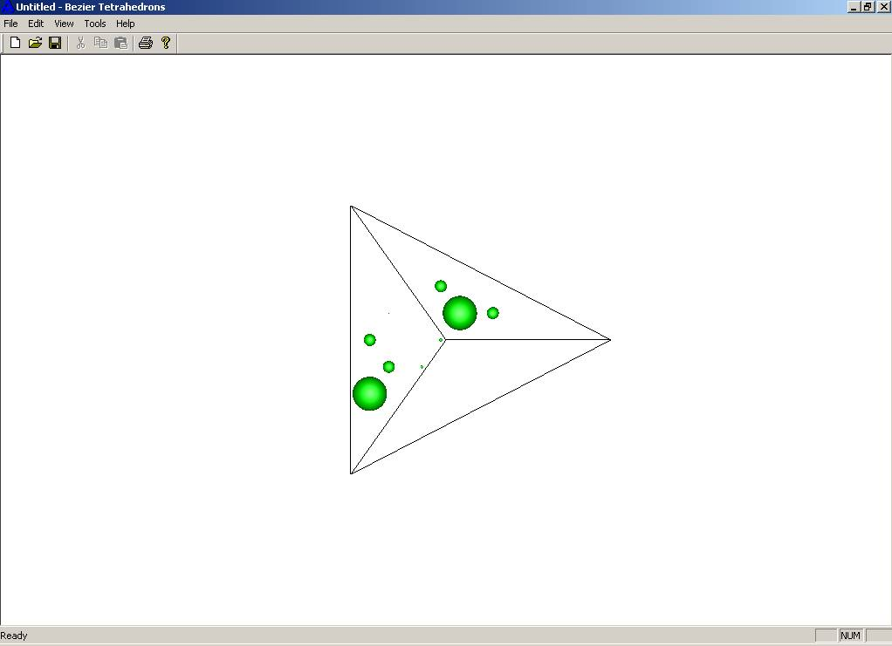

|
I learn't Basic language in 1992-1993 at School. Then, I learn't VB (Visual Basic) in summer of 1998. Following year (Summer of 1999), I took up C by using Yashwant Kanitkar's book. Exposure to C++ happened in summer of 2000. Started writing TSRs and DOS based GUI in TurboC/C++. In fall of 2000, I learn't Fortran. Undergraduate Project was also written in TurboC++. I learn't Visual C++, CAD (I-DEAS), FEA (ANSYS and I-DEAS), CAD API (ACIS), Matlab and Simulink in 2002 via various courses at ASU. In summer of 2002, I learn't Solidworks, NASTRAN, HTML, JScript, Macromedia Flash, Swish Max, Adobe Illustrator, etc. For various courses in computational geometry, computer graphics and finite element analysis, I did projects in C++ and OpenGL. Through these projects I recognized the use of geometry and graphics in CAD. I used to help many of my friends in computer science at ASU to debug their C++ code. During summer 2004, I coded form evaluation (from CMM point clouds) for planes, cylinders and spheres in C++. As a proof of concept of design 3D statistical tolerance analysis, manufacturing variations, and functional inspection for my Ph.D. work, I implemented the following modules using Visual C++, OpenGL, QHull and ACIS,
The code was written in a manner so that the front GUI could be ACIS based or OpenGL based. I Worked on MS Sql with ACIS (API) for a testbed on Design for Manufacturing (DfM). I combined feature recognition modules and feature tutor built in C++ using step/N-REP/ACIS with DfM testbed. Enhanced feature tutor for feature parameter extraction from edge selection using ACIS API. |
Black and Dekker Swing Arm SawUtilized drawings of swing arm saw to conduct tolerance analysis for controlling the location and orientation of the saw blade. Involved following the stack up path from hinge to the saw blade, using all types of tolerance and features. Finally checked the tolerance analysis for sensitivity and conducted tolerance allocation. Further work in this area led to report and conference paper. Jian A. D., Ameta G., Davidson J. K., Shah J. J., "Tolerance Analysis and Allocation using Tolerance-Maps for a Power Saw Assembly", Proc., 9th CIRP Int'l Seminar on CAT, April 10-12, 2005, Tempe, AZ, USA Jian A. D., Ameta G., Davidson J. K., Shah J. J., "Tolerance Analysis and Allocation using Tolerance-Maps for a Power Saw Assembly", In Models for Computer-Aided Tolerancing in Design and Manufacturing, (Proc., 9th CIRP Int'l Seminar on CAT, April 10-12, 2005, Tempe, AZ, USA), pp. 45-54, 2007, Springer, Dordrecht, Netherlands. Ameta G. and Davidson J.K., "An Executive Summary on the Master of Science Thesis of Mr. Wen(Antonio) Jian titled 'The Tolerance-Map® and its application to one stack up in a power saw'", July 2002. Angular FeaturesLearnt the procedure to build Tolerance-Map and applied to tolerances on angular features. Built T-Maps for five different cases of tolerances on angular features. Further work in this area led to conference paper. Ameta G., Davidson J. K., Shah J. J., "The Effects of Different Specifications on the Tolerance-Maps For An Angled Face", Proceedings of ASME 2004, Design Automation Conference, Salt Lake City, Utah, USA, September 28-October 2, Paper No. 57199 Conducted tolerance analysis for an assembly with angularity tolerance. Built T-Maps, combined them using Monkowski Sum and fitted them inside function T-Map to obtain stackup equations. Multi-constraint blockApplied the knowledge gained in developing T-Maps for angular features and conducting tolerance analysis to an overconstrained assembly. Identified the key assembly procedures and functional dimensions to conduct tolerance analysis. This was followed by T-Maps creation, T-Maps conformation to target feature, T-Maps addition, and fitting inside functional T-Map.  Cluster of FeaturesDeveloped math models for representing point-line cluster and respective T-Maps. The developed T-Maps for an assembly of four parts into picture frame. Create conformed T-Maps based on the feature target frame transformation matrix. Finally computed the minkowski shape (accumulation T-Map) of the conformed T-Maps. The stack up equations and tolerance allocation was completed based on fitting of accumulated T-Maps into a functional T-Map  Extended the point-line cluster into 3D by adding a plane and forming the point-line-plane cluster. Developed the math and the related T-Map for such a cluster Further work in the area resulted in a conference paper and later was modified into a journal publications: Ameta G., Davidson J. K., Shah J. J., "Tolerance-Maps Applied to A Point-Line Cluster of Features", Proceedings of American Society of Mechanical Engineering-International Design Engineering Technical Conference-2005/Design Automation Conference-85115, Long Beach, California, USA, September 24-28. Ameta G., Davidson J. K., Shah J. J., "Tolerance-Maps Applied to A Point-Line Cluster of Features", ASME Transaction, Journal of Mechanical Design, Vol 129(8), August, 2007, pp781-792. |
Tolerance Map for statistical and worst Case tolerance analysisA probability model for conducting statistical tolerance analysis and allocation is put forth in this dissertation. The model utilizes the ASU T-Maps model for geometric tolerances to build the frequency distribution for a dimension of interest in an assembly of parts. The central element of the ASU T-Maps model is the Tolerance-Map(T-Map); it is the range of points resulting from a one-to-one mapping from all the variational possibilities arising from the manufacture of a feature, within its tolerance- zone, to a specially designed Euclidean point-space. A functional T-Map represents both the acceptable range of one-dimensional dimension of interest and the acceptable limits to the three-dimensional variational possibilities of the target feature consistent with it. An accumulation T-Map represents all the accumulated three-dimensional variational possibilities of the target feature which arise from allowable variations on the individual parts in the assembly. The geometry of the target feature and a specific value of the dimension of interest are used to establish a functional surface that intersects the accumulation T-Map. The common points to the geometric shapes of the accumulation T- Map and the functional surface provide a measure of all variational possibilities of manufacture of the parts, which will give the specific value of the dimension of interest. By choosing many values of the dimension of interest, the measures are then arranged as a probability density function. Since, the ASU Tolerance-Map model is in conformance with alternate and supplemental specifications for tolerances in the ASME Y14.5 standard, the probability model also gives distinct results for each alternative and added refinement. The probability model from T-Maps presented in this thesis builds the probability distributions from the geometric bias of the tolerance zone and measurement type, while assuming equal likelihood of manufacturing biases. If consistent experimental data are available correlating the manufacturing biases to the position, orientation and form of a feature, these manufacturing biases can be included as weights when constructing the frequency distributions. The probability model is applied to several assemblies that contain planar features, an engaged pin and hole, an engaged tab and slot, a feature-cluster, and patterns of features. The results are compared with those from Monte Carlo simulations in commercial software. Implementation for worst case analysis dealt with (a) T-Map creation, (b) T-Map conformation for target, (c) T-Map accumulation, (d) T-Map fitting to function, (e) Compute sensitivity and allocate tolerances. Implementation for statistical analysis dealt with (a) Manufacturing distribution/bias selection, (b) T-Map conformation for target, (c) T-Map convolution using bias distributions, (d) S- surface computation based on inspection function, (e) Computing surface area of intersection of S- surface and Convolved T-Map for a given value of dimension of interest, and (f) building frequency distribution by varying the value of dimension of interest. Implementation was done in modular fashion so that the front end could be OpenGL based or ACIS based. Below are shown two demo's with OpenGL front end. First one shows creating T-Maps and conforming manually. The second one shows using CTF file (special ACIS/ASU tolerance constraint feature graph file) to load tolerance and use the testbed to conduct tolerance analysis |
Leonardo Vinci MechanismThis project was part of a CAD course taught by Prof. Jami Shah in Spring 2002. We were given sketches by Leonardo Da Vinci and were asked to design them in Ideas CAD software. The video below shows animation of the CAD assembly model created Futuristic Car Surface DesignThis project involved utilizing surface design tools available in Ideas to design a car surface. Played a lot with coons surface editing, NURBS surface editing/mirroring tools. Finally got a car surface that looked like a car with covers on. Another student used solid modeling tools to design the car and finally converted to surface using hollowing out operations and surface conversion. Tolerance Analysis ComparisonTwo assemblies with dimensional and orientational tolerances were considered. Worst case tolerance analysis was computed using T-Charts, VSA and T-Maps for these assemblies. Tolerance charts result from manual calculation matched with ASU T-Charts testbed. Sample results is shown in the table below. For the offset assembly, special consideration was given while conducting manual T-Charts in order to obtain correct results.
VSA, although conducted statistical tolerance analysis, was way under estimating worst case tolerances (1.92 without orientation control and 1.82 with orientation control, instead of 2.00 for both cases). Dimensions were considered point to point rather than functional dimensions. T-Maps results were in form of equation for size and orientation with worst-case values as expected.  Further collaboration and work on this project led to publication of journal paper: Shen Z., Ameta G., Shah J. J. and Davidson J. K., "A Comparative Study of Tolerance Analysis Methods", Journal of Computing and Information Science in Engineering, Vol. 5(3), September 2005, pp247-256. Chip Substrate Plate Design ReportIn a group project, we surveyed IC chip substrate plate design for thermal processing at Intel in 2002. Considered various design and developed new design options with FEA, FMEA, cost analysis, etc. A design report was submitted to Intel. Although, the project was classified, a general simplified substrate plate is shown in the figure below. TRIZ for Conceptual DesignApplied TRIZ principles for design of a device that enable mobility restricted individuals to play golf. It was a neat project in conceptual design and allowed us to use TRIZ principles to come up with innovative ideas. |
ACIS Based CSG CAD with Volume Surface and Center ExtractionThis project was part of CAD programming course taught by Prof. Mark Henderson in 2002. All the ACIS MFC functionality was implemented assuming a CSG type CAD system. Display of CSG history tree was also one of the highlight of this project. Ray firing api was used to compute volume of created CSG Object. ACIS Edge and Surface Picking for Feature Parameter ExtractionThis project was part of Feature Parameter Extraction to support DFM testbed. Implementaion related to switching ACIS mode to edge and then selecting edges. If a circular edge is picked, option to use its radius/diameter or to select another edge to identify distance was provided. The extracted parameters were then associated with a feature based in User-defined library. |
|
Sibson's Interpolant
Bezier Simplex
Hodograph
Blossoms Coons Patches Bezier Surface Bezier and BSpline Curves Delaunay All these projects were completed as part of two courses taught by Prof. Gerald Farin at ASU in 2002 and 2003. All programming was done in MFC, C++ and OpenGL. Sibson's InterpolantCAGD Projects: Sibson's Interpolant: Sibson's Interpolant is mainly used in multivariate data interpolation. Here we have used it to model a terrain, where x,y,z data of some location is available. The idea is to basically triangulate the input points in the x,y plane. Then generate the voronoi diagram. The next step is to simulate an insertion of point. Due to the insertion of this point P, the neighboring area of the voronoi polygons is effected. 

Therefore, barycentric combination of these affected area and their z coordinates are used to generate the z value for the new insertion point. i.e. Pz = Sum(Zi*AREAi(reduced)/Parea, i = 0...n). Note that the point is not actually inserted but only simulated. Therefore, the original voronoi polygons remain unchanged. Similarly, points are simulated for the whole domain. Few examples with the interpolated terrain and triangulation are shown. The above scheme describes the linear interpolant. A C1 interpolant is supposed to be better. Please refer http://dilbert.engr.ucdavis.edu/~suku/nem/ for further applications. 

Bezier SimplexCAGD Projects: Bezier Hyper-Tetrahedrons (4D): The concept of Bezier Tetrahedrons is an extension of bezier triangles. It basically uses barycentric coordinates to compute points. Here we are using 4D input to interpolate a Bezier 4D tetrahedron (simplex). Linear and Least square approximation will be used. Three of the parameters are x,y, z coordinates. The fourth parameter is the temperature distribution in the space. The input is shown in the first figure. The size of the sphere represents the magnitude of the temperature at that location. The input space is kept tetrahedral to make matter complicate. The linear and least squares out is shown in the following figures. Surprisingly, the least squares generates negative temperatures (spheres of different color) for some of the points.  HodographCAGD Projects: Hodograph: Hodographs are polar velocity diagrams represented by a series of basis vectors. These can be used to develop bezier curve, if each basis vector is part of control polygon when attached end to end. The degree of the bezier curve is represented by the number of input basis vectors. Hodographs are used in tool path generation and plotting wind velocity. While plotting wind velocities, the velocity vectors become the basis vector for a hodograph. Since hodographs are represented by velocity vector, the velocity vector might change in direction or magnitude or both. The first figure shown when only the direction is changed, while the second and third include change in direction and magnitude. The Premise to this project was from a paper that says "if a vector is transformed succesively using transforms such as scale, rotate, translate (but not reflect), then the resultant bezier curve will be atleast C2 continuous". BlossomsCAGD Projects: Blossoms: Given any control polygon, a new function is defined with number of parameters same as the degree of the curve. The points on the bezier curve can be evaluated when all the parameters are same and within the range 0-1. The range of all curves represented by this new function are called blossoms of the bezier curve. For a quadratic curve (degree two), the a blossom surface (two parameter) can be formed representing all the blossoms. For a cubic curve (degree three), a blossom volume can be formed representing all the blossom for the bezier curve. Blossoms are used in fast subdivision of a bezier curve while using DeCasteljau algorithm. Blossoms have also been used in Graph Matching algorithms as blossoms are subset of the original Graph(Bezier Curve in CAGD). 
Coons Patches and Reflection LinesCAGD Projects: Coons Patches and Reflection Lines: A coons patch tries to approximate the shape of the surface based on just the boundry curves (u=0, u=1, v=0 and v=1). The basic idea is to generate the points of the control polygon from the boundry control polygon. This requires a measure of goodness of the shape of the surface. While the standard Coon's algorithm is efficient various other algorithms are also proposed in the literature based on the permanence and modified permanence. An implementation of these algorithms was accomplished. Few examples are shown. The second part of the project involved generating reflection lines. The boundry curves for a mercedes fender was provided with the location of the lights and view direction. The resultant reflection lines on the surface were rendered in a post script file. 


Bezier SurfacesCAGD Projects: Bezier Surfaces: Input is the control polygon for the surface. The points can be read from a file or provided in the textbox on the status bar. The surface is computed using the Decasteljau algorithm. An example of a saddle surface is shown. The control polygon when looking along the z-axis looks square. Surface can be viewed with u-isoline, v-isoline or both. The surface can be edited by changing the control points. The control point can be translated along any vector. The surface will then be recomputed based on the new set of control polygon. Modified saddle is also shown in the next figure. Another example of mobius strip is shown. 

Bezier and BSpline CurvesCAGD Projects: Bezier Curves: To create a bezier curve, input in the form of control polygon is required. Mouse clicks on the screen adds the consecutive control points. The a degree of the curve is specified. Although degree and number of control points are linked but we might want two bezier curve from 9 CP of degree 4 (each with 5 CP and one common point for C0 continuity). Bezier curves are constructed using the DeCasteljau algorithm. Its easier to debug and visualize if the results at each step are correct. The resultant curve is also shown. 
The next figure shows multiple curves. Curve editing, by moving control point (see next figure), or by deleting a whole curve is also implemented. Curves can be translated or rotated. The purpose of the editing tool is create a meaningful shape by combining several curves. A conceptual shape of the car is created as the final task for the project.  
Once a desirable shape is created, it can be store as a PostScript file. (Viewable with GSviewer). The control points can also be saved as separate text file so as to open and edit later using the same program. 
BSpline curves were either clamped of unclamped and had option to modify control points and insert knots as shown in the animation below. Delaunay Triangulation and VoronoiDelaunay Triangulation of a simple point data. Point data can be added as x, y values or by click on the screen. A list of x, y values can be read from a text file also. The triangulation is built by adding each point one at a time. A virtual triangle of large proportions is added first so that any point added lies atleast within the virtual triangle. The virtual triangle or any edges connecting to the vertices of the virtual triangle are not displayed. 
Convex hull of the point data. Each triangle's edge is queried for its neighbor having a vertex as the vertex of the virtual triangle. The edge across which such neighbor exists is the edge belonging to the convex hull. 
A helpful tool to identify the neighbor of each triangle. This is helpful when debugging the code. 
Voronoi diagram of the triangulation. Voronoi diagrams are the dual to the delaunay triangulation. Voronoi diagram can be obtained by connecting the circumcenter (center of the circumcircle) of each triangle to its neighbor's circumcenter. Voronoi diagrams have various uses in path planning but is also used in identifying the location of a mobile phone. Each polygon in the voronoi diagram represents the range served by each mobile tower. The location of the tower is the small circle (see fig.) in the voronoi polygon (vertex of delaunay triangulation). 
The adjacent figure shows an application of triangulation to create a triangular mesh, to be used in Finite Element Analysis. The respective Voronoi diagram is also displayed. .jpg)
|
|
All the projects given below were programmed using C++, OpenGL and MFC during computer graphics course taught by Prof. Nelson in 2005. OpenGLSkeleton from holmes3d.net was used to simplify OpenGL based UI. Fly through Smooth Animations using KeyframeIn this project, visual animation of flythrough was developed by first capturing keyframes around an object using camera's postion and orientation. The six parameters are then used in interpolation using linear BSpline and C2 continuous BSpline under euler angles and quaternions. The keyframes are shown as vertices of a 3d edges as shown below. The computed BSpline and its control point can also be visualized. The animation can be done by moving the camera along the interpolated coordinates or moving another object. Ray TracingCG Projects: Raytracing: In this project, ray tracing algorithm based on location of camera, light and object is used to cast shadows and compute reflections. Multi-light based shadows can also be computed as shown below. Simple objects such as planes, spheres, ellipsoid and paraboloid were used. Combining texture mapping a reflections gives some unique results as shown below. Texture MappingCG Projects: Texture Mapping: In this project, there were two inputs, an off file and a image texture file. The object in the off file was processed for display and either a boundary was identified or spherical/cylindrical mapping was used to map the texture using various algorithms onto the 3D object. Image below shows 3d surface model of staple gun and one with a fireworks image mapped onto it. Different texture wrapping algorithms were implemented including average star, average distance, average angle and average area. These textures were iteratively mapped based on extraction of boundary edges of the off format file. Texture input using jpg and raw files was accepted. Bezier PatchesCG Projects: Bezier Patches: In this project the input was 32 patch bezier control points. The output was to be generated using OpenGL based program to visualize the resultant surface. Flat and smooth shaded objects were displayed by computing face normals and vertex normals. 
A shaded and wireframe utah tea pot is shown. An addition option was created so that each individual patch and patch boundary for other patches can be visualized with the patch normals. This output is also shown. 

|
|
These two projects were completed in C++ and OpenGL as part of Graduate FEA programming course at ASU in 2004. FEA Developer Projects: 3D TrussesThis project was an extension of the 2D project. Various trusses were taken as example cases. Two of the example are shown here. One for a cantilever type truss. Other one is simply supported beam on one end. Actual output was through a formatted text file. The program implemented can solve for Displacement loads, Forces, Temperature loads. The OpenGL output shows the original shape of the truss, the deformed shape and location of the constraints and the load. 

FEA Developer Projects: 2D Q4 (4 Noded Quadrilateral) ElementsFEA Developer Projects: 2D Q4 (4 Noded Quadrilateral) Elements: In this project we were supposed to create a Finite Element Program for solving 2D Plane Stress, Plane Strain problems using 4 Noded Quadrilateral. This included incorporating the shape functions used with 4 Noded Quadrilateral. Utilizing skyline scheme for modelling the problem in a matrix form. Then creating a solution using Gaussian Elimination. The various classes developed were: CVector, GaussWeight, CMatrix, CNode, CElement, CMaterialGroup, CNodalResponse, CElemental Response and CFeat. CFeat is the main class containing all the structures. The flow of the program was: Read Problem Size, Echo Input, ConstructK, ConstructF, ImposeBC, Solve, ComputeResponse, Create Output. The results from analysis with two cantilever beams is shown graphically. Range of Gray color represents lower to higher stress. Temperature loads can also be incorporated. |
Shortest Path Algorithm (Travelling Salesman)Line Follower and Constant Velocity Single Cylinder IC Engine CarThis project was completed as part of a course taught by Prof. Thomas Sugar in Spring 2002. The project involved using a Gasoline driven Single Cylinder IC Engine car with throttle. The car was hooked up with batteries to power BX24 chipset, camera and wireless communications. Matlab/Simulink was used to drive the throttle to maintain speed. The video from the camera was analysed to drive the steering mechanism by controlling a motor. Speed control test video Line follower video from onboard camera B+ trees |